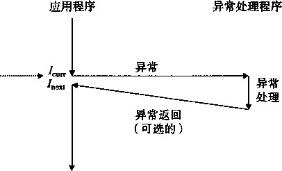
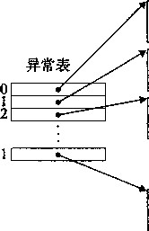
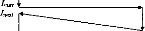

|
03 |
||||
|
12 |
lb |
eb |
0b |
|
|
13 |
Id |
8d |
76 |
00 |
|
14 |
20 |
83 |
cO |
05 |
|
15 |
23 |
eb |
03 |
|
|
16 |
25 |
83 |
cO |
06 |
|
17 |
28 |
89 |
ec |
|
|
18 |
2a |
5d |
||
|
)9 |
2b |
c3 |
push
mov
mov
le<
cm]
ja
in(
jm]
ad(
im
le<
adc
/ 0 ebp
%esp，％ebp
0x8(%ebp),%eax
Oxffffff9c(%eax),%edx
$0x5,%edx
25 <relo3+0x25>
95 00 00 00 00
*0x0(,%edx,4)
%eax
28 <relo3+0x28>
$0x3,%eax
28 <relo3+0x28>
OxO(°/ 0 esi) ,%esi
$0x5,%eax
p d V p t
m d o o e j amp r
28 <relo3+0x28>
$0x6,%eax
%ebp,%esp
%ebp
b)可重定位目标文件的.text节
This is the jump table for the swi tch statement
0000 28000000 15000000 25000000 18000000 4 words at offsets 0y：0 .0x4,0x8, and Oxc
0010 18000000 20000000 2 words at offsets Ox.lG and 0x14
c)可重定位目标文件的.rodata节 图 7-21 练习题 7.14 的示例代码
77.15 完成下面的任务将帮助你更熟悉处理目标文件的各种工具。
在你的系统上 ， libc.a和libm.a的版本中包含多少目标文件？
gcc-02产生的可执行代码与gcc -02 -g产生的不同吗？
在你的系统上 ， GCC驱动程序使用的是什么共享库？
练习题答案
练习题八1这道练习题的目的是帮助你理解链接器符号和C变量及函数之间的关系。注意C的本地变量 temp没有符号表条目。
W¥ swap.o .symtab条目？ 符号类型 在哪个模块中定义 T
buf
bufpO
bufpl
swap
temp
是
是
是
是
否
extern main.o .data
global swap. o .data
global swap.o .bss
global swap. o • text
练习题 7.2这是一个简单的练习，检查你对Unix链接器解析定义在一个以上模块中的全局符号时所使用 规则的理解。理解这些规则可以帮助你避免一些讨厌的编程错误。
链接器选择定义在模块1中的强符号，而不是定义在模块2中的弱符号（规则2):
REF (main. 1) ~> DEF (main. 1)
REF(main.2) —> DEF(main.l)
这是一个错误，因为每个模块都定义了一个强符号main (规则1)。
链接器选择定义在模块2中的强符号，而不是定义在模块1中的弱符号（规则2):
REF(x.l) —> DEF(x.2)
REF(x.2) —> DEF(x.2)
练习题 7.3在命令行中错误地放置静态库的位置是造成令许多程序员迷惑的链接器错误的常见原因。然 而，一旦你理解了链接器是如何使用静态库来解析引用的， ; 它就相当简单易懂了。这个小练习检查了你对 这个概念的理解：
gcc p.o libx.a
gcc p.o libx.a liby.a
gcc p.o libx.a liby.a libx.a
练习题 7.4这道题涉及的是图7-10中的反汇编列.表。目的是让你练习阅读反汇编列表，并检查你对PC 相对寻址的理解。
A.第5行被重定位引用的十六进制地址为0x80483bb。
B•第5行被重定位引用的十六进制值为0x9。记住，反汇编列表给出的引用值是用小端法字节顺序表示的。
C.这里的关键观察点是无论链接器将.text节定位在哪里，引用和swap函数间的距离总是一样的。 因此，无论链接器将.text节定位在何处，因为引用是一个PC相对地址，所以它的值都将是0x9。
练习题 7.5对大多数程序员而言，C程序实际是如何启动的是一个谜。这些问题检查了你对这个启动过程 的理解。你可以参考图7-14中的C启动代码来回答这些问题：
每个程序都需要一个main函数，因为C的启动代码对于每个C程序而言都是相同的，要跳转到一 个叫做main的函数上。
如果main以return语句终止，那么控制传递回启动程序，该程序通过调用—exit再将控制返 回给操作系统。如果用户省略了 return语句，也会发生相同的情况。如果main是以调用exit终止 的，那么exit将最终通过调用_找1七将控制返回给操作系统。在这三种情况中，最终效果是相同的：当 main完成时，控制会返回给操作系统。
| 第 8 章 |
I Con^uter Systems ： A Programmer' s Perspective, 2E
异常控制流
从给处理器加电开始，直到断电为止，程序计数器假设一个值的序列
以 0 ， 以1，•••，
其中，每个q是某个相应的指令厶的地址。每次从到〜i的过渡称为控制转移（control transfer ) 0 这样的控制转移序列叫做处理器的控制流（flow of control或control flow)。
最简单的一种控制流是一个“平滑的”序列，其中每个A和人 +1 在存储器中都是相邻的。典 型地，这种平滑流的突变，也就是&与厶不相邻，是由诸如跳转、调用和返回这样一些熟悉的 程序指令造成的。这样一些指令都是必要的机制，使得程序能够对由程序变量表示的内部程序状 态中的变化做出反应。
但是系统也必须能够对系统状态的变化做出反应，这些系统状态不是被内部程序变量捕获 的，而且也不一定要和程序的执行相关。比如，一个硬件定时器定期产生信号，这个事件必须得 到处理。包到达网络适配器后，必须存放在存储器中。程序向磁盘请求数据，然后休眠，直到被 通知数据已就绪。当子进程终止时，创造这些子进程的父进程必须得到通知。
现代系统通过使控制流发生突变来对这些情况做出反应。一般而言，我们把这些突变称为异 常控制流（Exceptional Control Flow, ECF)。异常控制流发生在计算机系统的各个层次。比如， 在硬件层，硬件检测到的事件会触发控制突然转移到异常处理程序。在操作系统层，内核通过上 下文转换将控制从一个用户进程转移到另一个用户进程。在应用层，一个进程可以发送信号到另 一个进程，而接收者会将控制突然转移到它的一个信号处理程序。一个程序可以通过回避通常的 栈规则，并执行到其他函数中任意位置的非本地跳转来对错误做出反应。
作为程序员，理解ECF很重要，这有很多原因：
•理解ECF将帮助你理解重要的系统概念。ECF是操作系统用来实现I/O、进程和虚拟存储 器的基本机制。在能够真正理解这些重要概念之前，你必须理解ECF。
•理解ECF将帮助你理解应用程序是如何与操作系统交互的。应用程序通过使f 一个叫做陷 阱（trap)或者系统调用（system call)的ECF形式，向操作系统请求服务。比如，向磁盘 写数据、从网络读取数据、创建一个新进程，以及终止当前进程，都是通过应用程序调用 系统调用来实现的。理解基本的系统调用机制将帮助你理解是如何向应用提供这些服务的。
理解ECF将帮助你编写有趣的新应用程序。操作系统为应用程序提供了强大的ECF机制， 用来创建新进程、等待进程终止、通知其他进程系统中的异常事件，以及检测和晌应这些 事件。如果你理解这些ECF机制，那么你就能用它们来编写诸如Unix外壳和Web服务器 之类的有趣程序了。
•理解ECF将帮助你理解并发。ECF是计算机系统中实现并发的基本机制。中断应用程序、 进程和线程（它们的执行在时间上是重叠的）执行的异常处理程序和中断应用程序执行的 信号处理程序都是在运行中的并发的例子。理解ECF是理解并发的第一步。我们会在第 12章中更详细地研究并发。
•理解ECF将帮助你理解软件异常如何工作。像0+和Java这样的语言通过try、catch以及 ttrow语句来提供软件异常机制。软件异常允许程序进行非本地跳转（违反通常的调用/返回 栈规则的跳转）来响应错误情况。非本地跳转是一种应用层ECF,在C中是通过set jmp 和longjmp函数提供的。理解这些低级函数将帮助你理解高级软件异常如何得以实现。
对系统的学习，到目前为止你已经了解了应用是如何与硬件交互的。这一章的重要性在于你 将开始学习应用是如何与操作系统交互的。有趣的是,这些交互都是围绕着ECF的。我们将描 述存在于一个计算机系统中所有层次上的各种形式的ECF。从异常开始，异常位于硬件和操作 系统交界的部我们还会讨论系统调用，它们是为应用程序提供到操作系统的入口点的异常。 然后，我们会提升抽象的层次，描述进程和信号，它们位于应用和操作系统的交界之处。最后， 我们将讨论非本地跳转，这是ECF的一种应用层形式。
8.1 异常
异常是异常控制流的一种形式，它一部分是由硬件实现的，一部分是由操作系统实现的。西 为它们有一部分是由硬件实现的，所以具体细节将随系统的不同而有所不同。然而，对于每个系 统而言，基本的思想都是相同的。在这一节中我们的目的是让你对异常和异常处理有一个一般性 的了解，并且向你揭示现代计算机系统的一个经常令人感到迷惑的方面。
事件在这 里发生

异常的剖析。处理器状态中的变化（事件）触发 从应用程序到异常处理程序的突发的控制转移 (异常)。在异常处理程序完成处理后，它将控制 返回给被中断的程序或者终止
异常（exception)就是控制流中的突变，用来响应处理器状态中的某些变化。图8-1展示了 基本的思想。在图中，当处理器状态中发生一个重要的变化时，处理器正在执行某个当前指令 在处理器中，状态被编码为不同的 位和信号。状态变化称为事件（event)。
事件可能和当前指令的执行直接相关。
比如，发生虚拟存储器缺页、算术溢出，
或者一条指令试图除以零。另一方面，
事件也可能和当前指令的执行没有关系。
比如，一个系统定时器产生信号或者一 个I/O请求完成。
图 8-1
在任何情况下，当处理器检测到有事 件发生时，它就会通过一 张叫做异常表 (exception table)的跳转表，进行一个间 接过程调用（异常)，到一个专门设计用 来处理这类事件的操作系统子程序（异 常处理程序 （exception handler))。
当异常处理程序完成处理后，根据引起异常的事件的类型，会发生以下三种情况中的一种：
处理程序将控制返回给当前指令/胃，即当事件发生时正在执行的指令。
处理程序将控制返回给J next ,即如果没有发生异常将会执行的下一条指令。
处理程序终止被中断的程序。
8.1.2节将讲述关于这些可能性的更多内容。
硬件异常与软件异常
OH■ 和 Java 的程序员会注意到术语 “ 异常 ” 也用来描述由 OH• 和 Java 以 catch、throw 和 try 语句的形式提供的应用级 ECF 。如果想完全弄清楚，我们必须区别 “ 硬件 ” 和 “ 软件 ” 异常，但是这通常是不必要的，因为从上下文中就能够 ;f 艮清楚地知道是哪种含义。
8.11 异常处理
异常可能会难以理解，因为处理异常需要硬件和软件紧密合作。很容易搞混哪个部分执行哪 个任务。让我们更详细地来看看硬件和软件的分工吧。
系统中可能的每种类型的异常都分配了一个唯一的非负整数的 异常号 （exception number )。 其中一些号码是由处理器的设计者分配的，其他号码是由操作系统内核（操作系统常驻存储器的 部分）的设计者分配的。前者的示例包括被零除、缺页、存储器访问违例、断点以及算术溢出。 后者的示例包括系统调用和来自外部I/O设备的信号。
在系统启动时（当计算机重启或者加电时)，操作系统分配和初始化一张称为 异常表 的跳转 表，使得条目 k 包含异常 k 的处理程序的地址。图8-2展示了一张异常表的格式。

异常处理程序0的代码
异常处理程序1的代码
异常处理程序2的代码.
异常处理程序w-1的代码
在运行时（当系统在执行某个程序时)，处理 器检测到发生了一个事件，并且确定了相应的异 常号h随后，处理器触发异常，方法是执行间接 过程调用，通过异常表的条目&转到相应的处理程 序。图8-3展示了处理器如何使用异常表来形成适 当的异常处理程序的地址。异常号是到异常表中 的索引，异常表的起始地址放在一 个叫做异常表 基址寄存器 （exception table base register)的特殊 CPU寄存器里 。
图8-2异常表。异常表是一张跳转表，其中条 目灸包含异常A的处理程序代码的地址
异常类似于过程调用，但是有一些重要的不 同之处。
异常表
异常号 (x4)
开吊衣港 Bt r) Tj*iSrr |
图8-3生成异常处理程序的地址。异常号是到异常表中的索引
•过程调用时，在跳转到处理程序之前，处理器将返回地址压入栈中。然而，根据异常的类 型，返回地址要么是当前指令（当事件发生时正在执行的指令)，要么是下一条指令（如 果事件不发生，将会在当前指令后执行的指令)。
•处理器也把一些额外的处理器状态压到栈里，在处理程序返回时，重新开始被中断的程序 会需要这些状态。比如，一个IA32系统将包含当前条件码和其他内容的EFLAGS寄存器 压入栈中。
•如果控制从一个用户程序转移到内核，那么所有这些项目都被压到内核栈中，而不是压到 用户栈中。
•异常处理程序运行 在内核模式下 （见8.2.4节)，这意味着它们对所有的系统资源都有完全 的访问权限。
一旦硬件触发了异常，剩下的工作就是由异常处理程序在软件中完成。在处理程序处理完事件之 后，它通过执行一条特殊的“ 从中断 返回”指令，可选地返回到被中断的程序，该指令将适当的 状态弹回到处理器的控制和数据寄存器中，如果异常中断的是一个用户程序，就将状态恢复为用 户模式 （见8.2.4节)，然后将控制返回给被中断的程序。
8.1.2 异常的类别
异常可以分为四类： 中断 （interrupt)、 陷阱 （trap)、 故障 （fault) 和终止 （abort)。图8-4 中的表对这些类别的属性做了小结。
1 .中断
中断是异步发 生的，是来自处理器外部的I/O设备的信号的结果。硬件中断不是由任何一条
专门的指令造成的，从这个意义上来说它是异步的。硬件中断的异常处理程序通常称为中 断处理 程序(interrupt handler)。
类别 |
原因 |
异步/同步 |
返回行为 |
中断 |
来自I/o设备的信号 |
异步 |
总是返回到下一条指令 |
陷阱 |
有意的异常 |
同步 |
总是返回到下一条指令 |
故障 |
潜在可恢复的错误 |
同步 |
可能返回到当前指令 |
终止 |
不可恢复的错误 |
同步 |
不会返回 |
图8-4异常的类别。异步异常是由处理器外部的I/O设备中的事件产生的，同步异常是执行一条指令 的直接产物
图8-5概述了一个中断的处理。I/O设备，例如网络适配器、磁盘控制器和定时器芯片，通 过向处理器芯片上的一个引脚发信号，并将异常号放到系统总线上，以触发中断，这个异常号标 识了引起中断的设备。
在当前指令完成执行之后，
图8-5
中断处理。中断处理程序将控制返回给应用程序控制流中 的下一条指令
(2)在当前指令完成后， 控制传递给处理程序
(1)在当前指令 的执行过程中，中 断引脚电压变髙了

(3)中断处 理程序运行
(4)处理程序返回 到下一条指令
处理器注意到中断引脚的电压变 高了，就从系统总线读取异常 号，然后调用适当的中断处理程 序。当处理程序返回时，它就将 控制返回给下一条指令（即如果 没有发生中断，在控制流中会在 当前指令之后的那条指令）。结 果是程序继续执行，就好像没有 发生过中断一样。
剩下的异常类型（陷阱、故障和终止）是同步发生的，是执行当前指令的结果。我们把这类 指令叫做故障指令（faulting instruction)。
2.陷拼和系统调用
陷阱是有意的 异常，是执行一条指令的结果。就像中断处理程序一样，陷阱处理程序将控制 返回到下一条指令。陷阱最重要的用途是在用户程序和内核之间提供一个像过程一样的接口，叫 做系统调用。
(1)应用程 syscall 序执行一次系 统调用
(2)控制传递给处理程序
用户程序经常需要向内核请求服务，比如读一个文件（read)、创建一个新的进程 (fork)、加载一个新的程序（execve),或者终止当前进程（exit)。为了允许对这些内核服 务的受控的访问，处理器提供了一条特殊的“syscallw”指令，当用户程序想要请求服务《 时，可以执行这条指令。执行syscall指令会导致一个到异常处理程序的陷阱，这个处理程序 对参数解码，并调用适当的内核 程序。图8-6概述了一个系统调 用的处理。从程序员的角度来看，
图8-6陷阱处理。陷阱处理程序将控制返回给应用程序控制流中 的下一条指令
(4)处理程序返回到 syscall之后的指令
(3)陷阱处 理程序运行
系统调用和普通的函数调用是一 样的。然而，它们的实现是非常 不同的。普通的函数运行在用户 樸式（user mode)中，用户模式 限制了函数可以执行的指令的类 型，而且它们只能访问与调用函
数相同的栈。系统调用运行在内 核模式 （kernel mode)中，内核模式允许系统调用执行指令，并 访问定义在内核中的栈。8.2.4节会更详细地讨论用户模式和内核模式。
3 .故障
故障由错误情况引起,它可能能够被故障处理程序修正。当故障发生时，处理器将控制转移 给故障处理程序。如果处理程序能够修正这个错误情况，它就将控制返回到引起故障的指令，从 而重新执行它。否则，处理程序返回到内核中的abort例程，abort例程会终止引起故障的应 用程序。图8-7概述了一个故障的处理。
|
⑴当前指令 T, |
(2)控制传递给处理程序 L --- 、… h |
|
|
导致一个故障 |
(3)故障处 r 理程序运行 |
|
|
(4)处理程序要么重新 |
||
|
^ 执行指令，要么终止 |
||
图8-7故障处理。根据故障是否能够被修复，故障处理程序要么重新执行引起故障的指令，要么终止
一个经典的故障示例是缺页异常，当指令引用一个虚拟地址，而与该地址相对应的物理页面 不在存储器中，因此必须从磁盘中取出时，就会发生故障。就像我们将在第9章中看到的那样、 一个页面就是虚拟存储器的一个连续的块（典型的是4KB)。缺页处理程序从磁盘加载适当的页 面，然后将控制返回给引起故障的指令。当指令再次执行时，相应的物理页面已经驻留在存储器 中了，指令就可以没有故障地运行完成了。
4 .终止
终止是不可恢复的致命错误造成的结果，通常是一些硬件错误，比如DRAM或者SRAM位 被损坏时发生的奇偶错误。终止处理程序从不将控制返回给应用程序。如图8-8所示，处理程序 将控制返回给一个abort例程，该例程会终止这个应用程序。
( ,) 发生致命 1 ” （ 2 )传递控制给处理程序 ,
的硬件错误 CU,T ""1 (3)终止处
理程序运行
► abort
t (4)处理程序返回到
abort例程
图8-8终止处理。终止处理程序将控制传递给一个内核abort例程，该例程会终止这个应用程序
Linux/IA32 系统中的异常
为了使描述更具体，让我们来看看为IA32系统定义的一些异常。有髙达256种不同的异常 类型[27]。0〜31的号码对应的是由Intel架构师定义的异常，因此对任何IA32系统都是一样的。 32〜255的号码对应的是操作系统定义的中断和陷阱。图8-9展示了一些示例。
Linux/IA32 故障和终止
除法错误。 当应用试图除以零时，或者当一个除法指令的结果对于目标操作数来说太大了 的时候，就会发生除法错误（异常0)。Unix不会试图从除法错误中恢复，而是选择中止程序。 Linux外壳通常会把除法错误报告为“浮点异常”（Floating exertion)。
异常号 |
描述 |
异常类别 |
0 |
除法错误 |
故障 |
13 |
一般保护故障 |
故障 |
14 |
缺页 |
故障 |
• 18 |
机器检查 |
终止 |
32 〜127 |
操作系统定义的异常 |
中断或陷阱 |
128 (0x80) |
系统调用 |
陷阱 |
129 〜255 |
操作系统定义的异常 |
中断或陷阱 |
图8-9 IA32系统中的异常示例
一般保护故障。 许多原因都会导致不为人知的一般保护故障（异常13),通常是因为一个程 序引用了一个未定义的虚拟存储器区域，或者因为程序试图写一个只读的文本段。Linux不会尝 试恢复这类故障。Linux外壳通常会把这种一般保护故障报告为“段故障”（Segmentaticmfault)。
缺页（异常14)是会重新执行产生故障的指令的一个异常示例。处理程序将磁盘上物理存 储器相应的页面映射到虚拟存储器的一个页面，然后重新开始这条产生故障的指令。我们将在第 9章中看到缺页是如何工作的细节。
机器检查。 机器检查（异常18)是在导致故障的指令执行中检测到致命的硬件错误时发生 的。机器检査处理程序从不返回控制给应用程序。
Linux/IA32系统调用
Linux提供上百种系统减用，当应用程序想要请求内核服务时可以使用，包括读文件、写文 件或是创建一个新进程。图8-10给出了一些常见的Linux系统调用。每个系统调用都有一个唯 一的整数号，对应于一个到内核中跳转表的偏移量。
编号 |
名字 |
描述 |
编号 |
名字 |
描述 |
1 |
exit |
结束进程 |
27 |
alarm |
设置传送信号的警告时钟 |
2 |
fork |
创建新进程 |
29 |
pause |
挂起进程直到信号到达 |
• 3 |
read |
读文件 |
37 |
kill |
发送信号（译者注：结束信 号）到另一个进程 |
4 |
write |
写文件 |
48 |
signal |
安装一个信号处理程序 |
5 |
open |
打开文件 |
63 |
dup2 |
复制文件描述符 |
6 |
close |
关闭文件 |
64 |
getppid |
获得父进程ID |
7 |
waitpid |
等待子进程结束 |
65 |
getpgrp |
获得进程组. |
11 |
execve |
加载和运行程序 |
67 |
sigaction |
.安装可移植的信号处理程序 |
19 |
lseek |
定位到文件偏移量处 |
90 |
mmap |
将存储器页映射到文件 |
20 |
getpid |
获得进程ID |
106 |
stat |
获得有关文件的信息 |
图 8-10 Linux/IA32 系统中常用的系统调用示例。 Linux 提供上百种系统调用。来源： /iisr/include/sys/ syscall.h
在IA3.2.系统上，系统调用是通过一条称为int n 的陷阱指令来提供的，其中《可能是IA32 异常表中256个条目中任何一个的索引。在历史上,系统调用是通过异常128 (0x80)提供的。
C程序用syscall函数可以直接调用任何系统调用。然而，实际中几乎没必要这么做。对 于大多数系统调甩，标准C库提供了一组方便的包装函数。这些包装函数将参数打包到一起, 以适当的系统调用号陷入内核，然后将系统调用的返回状态传递回调用程序。在本书全文中，我 们將系统调用和与它们相关联的包装函数称为 系统级 函数，这两个术语可以互换地使用。
研究程序能够如何使用int指令来直接调用Linux系统调用是很有趣的。所有的到Linux 系统调用的参数都是通过通用寄存器而不是栈传递的。按照惯例，寄存器％eax包含系统调用 号，寄存器％ebx、％ecx、％edx、％esi、%edi和％ebp包含最多六个任意的参数。栈指针％esp 不能使用，因为当进入内核模式时，内核会覆盖它。
例如，考虑大家熟悉的hello程序的下面这个版本，是用系统级函数write来写的：
int main()
write(1, "hello, world\n M , 13);
exit(O);
write函数的第一个参数将输出发送到stdout。第二个参数是要写的字节序列，而第三 个参数是要写的字节数。
图8-11给出的是hello程序的汇编语言版本，直接使用int指令来调用write和exit 系统调用。第9〜13行调用write函数。首先，第9行将系统调用write的编号存放在％eax 中，第10〜12行设置参数列表。然后第13行使用int指令来调用系统调用。类似地，第 14〜16行调用exit系统调用。
code/ecf/hello-asm.sa
|
1 |
.section .data |
|
|
2 |
string: |
|
|
3 |
.ascii "hello, world\n" |
|
|
4 |
string_end : |
|
|
5 |
.equ len, string_end |
- string |
|
6 |
.section .text |
|
|
7 |
.globl main |
|
|
8 |
main: |
|
|
First, call w:ri te(1, "hello, world\n" , 13) |
||
|
9 |
movl $4, %eax |
System call number 4 |
|
10 |
movl $1, %ebx |
stdout has descriptor 1 |
|
11 |
movl $string, %ecx |
Hello uorld string |
|
12 |
movl $len, %edx |
String length |
|
13 |
int $0x80 |
System call code |
|
Mext, call exi t (0) |
||
|
14 |
movl $1, %eax |
System call number 0 |
|
15 |
movl $0, %ebx |
Argument is 0 |
|
16 |
int $0x80 |
System call code |
code/ecf/hello-asm.sa 图 8-11 直接用 Linux 系统调用来实现 hello 程序
关于术语的注释
各种异常类型的术语是根据系统的不同而有所不同的。处理器宏体系结构（macroarchitecture) 规范通常会区分异步的“中断”和同步的“异常”，但是并没有提供描述这些非常相似的概念的 概括性的术语。为了避免不断地提到“异常和中断”以及“异常或者中断”，我们用单词“异常” 作为通用的术语，而且只有在必要时才区别异步异常（中断）和同步异常（陷阱、故障和终止）。 正如我们提到过的，对于每个系统而言，基本的概念都是相同的，但是你应该意识到一些制造厂 商的手册会用“异常”仅仅表示同步事件引起的控制流的改变。
8.2 进程
异常是允许操作系统提 供进程 （process)的概念所需要的基本构造块，进程是计算机科学中 最深刻最成功的概念之一。
当我们在一个现代系统上运行一个程序时，会得到一个假象，就好像我们的程序是系统中当 前运行着的唯一的程序。我们的程序好像是独占地使用处理器和存储器。处理器就好像是无间断 地一条接一条地执行程序中的指令。最后，我们程序中的代码和数据好像是系统存储器中唯一的 对象。这些假象都是通过进程的概念提供给我们的。
进程的经典定义就是一个 执行中的程序的实例 。 系统中的每个程序都是运行在某个进程的上 下文（context)中的。上下文是由程序正确运行所需的状态组成的。这个状态包括存放在存储器 中的程序的代码和数据，它的栈、通用目的寄存器的内容、程序计数器、环境变量以及打开文件 描述符的集合。
每次用户通过向外壳输入一个可执行目标文件的名字，并运行一个程序时，外壳就会创建一 个新的进程，然后在这个新进程的上下文中运行这个可执行目标文件。应用程序也能够创建新进 程，且在这个新进程的上下文中运行它们自己的代码或其他应用程序。
关于操作系统如何实现进程的细节的讨论超出了本书的范围。反之，我们将关注进程提供给 应用程序的关键抽象：
•一个独立的 逻辑控制流， 它提供一个假象，好像我们的程序独占地使用处理器。
•一个私有的地址空间，它提供一个假象，好像我们的程序独占地使用存储器系统。
让我们更深入地看看这些抽象。
8.2.1 逻辑控制流
即使在系统中通常有许多其他程序在运行，进程也可以向每个程序提供一种假象，好像它在 独占地使用处理器。如果想用调试器单步执行程序，我们会看到一系列的程序计数器（PC)的 值，这些值唯一地对应于包含在程序的可执行目标文件中的指令，或者是包含在运行时动态链接 到程序的共享对象中的指令。这个PC值的序列叫做 逻辑控制流， 或者简称逻 辑流。
考虑一个运行着三个进程的系统，如图8-12所示。处理器的一个物理控制流分成了三个逻 辑流，每个进程一个。每个竖直的条表示一个进程的逻辑流的一部分。在这个例子中，三个逻辑 流的执行是交错的。进程A运行了一会儿，然后是进程B开始运行到完成。然后，进程C运行 了一会儿，进程A接着运行直到完成。最后，进程C可以运行到结束了。
图8-12的关键点在于进程是轮流使用处 、_ a 、_ 、_
理器的。每个进程执行它的流的一部分，然
后 被抢占 （preempted)(暂时挂起），然后轮 到其他进程。对于一个运行在这些进程之一 的上下文中的程序，它看上去就像是在独占时间 地使用处理無。唯一的反面例证是，如果我 们精确地测量每条指令使用的时间，会发现 在程序中一些指令的执行之间，CPU好像会 周期性地停顿。然而，每次处理器停顿，它图8-12逻辑控制流。进程为每个程序提供了一种假 随后继续执行我们的程序，并不改变程序存 象，好像程序在独占地使用处理器。每个竖
储器位置或寄存器的内容。 直的条表示一个进程的逻辑控制流的一部分
8-2.2 并发流
计算机系统中逻辑流有许多不同的形式。异常处理程序、进程、信号处理程序、线程和Java 进程都是逻辑流的例子。
一个 逻辑流的执行在时间上与另一个流重叠，称为 并发流 （concurrentflow),这两个流被称 为并发地运行 。更准确地说，流X和Y互相并发，当且仅当X在Y开始之后和Y结束之前开始, 或者Y在X开始之后和X结束之前开始。例如，在图8-12中，进程A和B并发地运行，A和C 也一样。另一方面，B和C没有并发地运行,因为B的最后一条指令在C的第一条指令之前执行。
多个流并发地执行的一般现象称 为并发（ concurrency )。 一个进程和其他进程轮流运行的 概 念称为 多任务（ multitasking )。一个 进程执行它的控制流的一部分的每一时间段叫做 时间片 (time slice )。 因此，多住务也叫做时 间分片 （time slicing )。 例如，在图 8-12 中，进程 A 的流由 两个时间片组成。
注意，并发的思想与流运行的处理器核数或者计算机数无关。如果两个流在时间上重叠，那 么它们就是并发的，即使它们是运行在同一个处理器上的。然而，有时我们会发现确认并行流是 很有帮助的，它是并发流的一个真子集。如果两个流并发地运行在不同的处理器核或者计算机 上，那么我们称 它们为并行流 （parallel flow), 它 们并行地运行 （running in parallel), 且 并行地 执行 （parallel execution )。
®练习题8.1考虑三个具有下述起始和结束时间的进程：
进程 |
起始时间 |
结束时间 |
A |
0 |
2 |
B |
1 |
4 |
C |
3 |
5 . |
对于每对进程，指出它们是否是并发地运行的：
进程对 |
并发的？ |
AB |
|
AC |
|
BC |
私有地址空间
进程也为每个程序提供一种假象，好像它独占地使用系统地址空间。在一台有《位地址的机 器上， 地址空间是 2"个可能地址的集合，0, 1,…，2"-1。一个进程为每个程序提供它自己的 私有地址空间。 一般而言，和这个空间中某个地址相关联的那个存储器字节是不能被其他进程读 或者写的，从这个意义上说，这个地址空间是私有的。
尽管和每个私有地址空间相关联的存储器的内容一般是不同的，但是每个这样的空间都有相 同的通用结构。比如，图8-13展示了一个x86 Linux进程的地址空间的组织结构。地址空间底部 是保留给用户程序的，包括通常的文本、数据、堆和栈段。对于32位进程来说，代码段从地址 0x08048000开始，对于64位进程来说，代码段从地址0x00400000开始。地址空间顶部是 保留给内核的。地址空间的这个部分包含内核在代表进程执行指令时（比如，当应用程序执行一 个系统调用时）使用的代码、数据和栈。
用户模式和内核模式
为了使操作系统内核纖一个无懈可击的进程抽象，处理器必须提供一种机制，限制一个应 用可以执行的指令以及它可以访问的地址空间范围。
处理器通常是用某个控制寄存器中的一个 模式位 （modeWt)来提供这种功能的,该寄存器 描述了进程当前享有的特权。当设置了模式位时，进程就运行 在内核模式中 （有时 叫做超级用户 模式)。一个运行在内核模式的进程可以执行指令集中的任何指令，并且可以访间系统中任何存 储器位置 。
内核虚拟存储器 ( 代码、数据、堆、栈）
用户代码不可见 的存储器
-%esp ( 栈指针）
用户栈 ( 运行时创建的）
共拿库的存储器映射区域 !
-brk
运行时堆 ，•
( 用 halloc 仓 || 率的 )
_/写& 、
(.data、.bss )
只读段
0x08048000 (32) 0x00400000 (64)
(.init、. text、.rodata)
I
图 8-13 进程地址空间
没有设置模式位时，进程就运行在 用户模 式中。用户模式中的进程不允许执行特 权指令 (privileged instruction),比如停止处理器、改变模式位，或者发起一个I/O操作。也不允许用户 模式中的进程直接引用地址空间中内核区内的代码和数据。任何这样的尝试都会导致致命的保护 故障。反之，用户程序必须通过系统调用接口间接地访问内核代码和数据。
运行应用程序代码的进程初始时是在用户模式中的。进程从用户模式变为内核模式的唯一方 法是通过诸如中断、故障或者陷入系统调用这样的异常。当异常发生时，控制传递到异常处理程. 序，处理器将模式从用户模式变为内核模式。处理程序运行在内核模式中，当它返回到应用程序 代码时，处理器就把模式从内核模式改回到用户模式。
Linux提供了一种聪明的机制，叫做/proc文件系统，它允许用户模式进程访问内核数 据结构的内容。/proc文件系统将许多内核数据结构的内容输出为一个用户程序可以读的文 本文件的层次结构。比如，你可以使用/proc文件系统找出一般的系统属性，如CPU类型 (/proc/cpuinfo),或者某个特殊的进程使用的存储器段（/proc/〈process id>/maps)。 2.6版本的Linux内核引入/sys文件系统，它输出关于系统总线和设备的额外的低层信息。
8.2.5 上下文切换
操作系统内核使用一种称 为上下文切换 （context switch)的较高层形式的异常控制流来实现 多任务。上下文切换机制是建立在8.1节中已经讨论过的那些较低层异常机制之上的。
内核为每个进程维持一个上下文（context)。上下文就是内核重新启动一个被抢占的进程所 需的状态。它由一些对象的值组成，这些对象包括通用目的寄存器、浮点寄存器、程序计数器、 用户栈、状态寄存器、内核栈和各种内核数据结构，比如描绘地址空间的 页表、 包含有关当前进 程信息的进 程表， 以及包含进程已打开文件的信息的文 件表。